- 2026-01-31
- See also
2026-01-31 - initial writeup
- Note that it’s actually A/B/U, Obsidian just doesn’t play nicely with / symbols in file names
- Made a slide deck for in-person presentation night too, but I think this document is more self-contained
- I discovered ORI’s A B U a few days ago and I’ve found it incredibly useful, plausibly one of the most immediately useful and insight-bringing concepts of recent memory (a very big “A” for me!)
- (Note that I have been in an A Drought for a while, which may be part of the explanation here)
- As a sidenote, it was Defender of Basic of ORI who inspired me to make this website, and taught me how (via his guide)
- See e.g. “What does it mean to be in ORI?” (Open Question)
- But ORI never quite clicked for me. I hung out in the Discord a tiny amount, wrote in there, got nudged by Defender, but it really just didn’t click.
- Maybe it has clicked now? They still don’t have complete onboarding docs, but A/B/U rules and really does feel like it shines a clear light on what they’re doing, in a way that I just couldn’t grok it before.
- (I’m also really excited at the implications of the “cargo culting” doc being a WIP doc in their onboarding materials)
- Why do I love A/B/U so much?
Gives me clear language for stuff I’ve been thinking about
- Because I didn’t have clear language, I couldn’t properly think about/with these things, but these things were these fuzzy, “almost-within-touching-distance” things in my mind
- E.g., on the 28th of Jan 2026 I tweeted something, and then the next day, I learned about A/B/U and realised that “A” is what I was trying to point at!
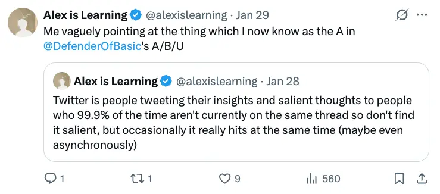
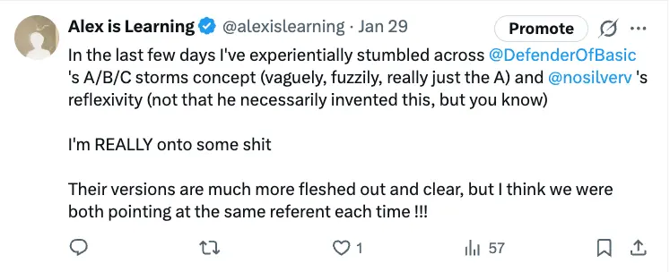
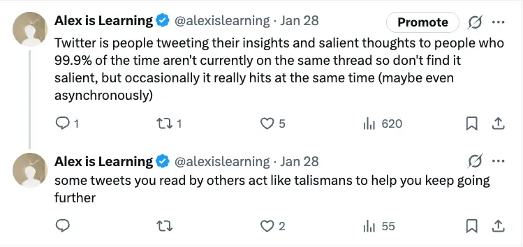
- But really, this has been on my mind for years, the idea of As and how mysterious they are
- E.g., I fell in love with David Foster Wallace’s writing when I was like, 19. And then I noticed how infrequently this happened, like, I’ve never since then (in 10 years) discovered a writer who I’ve loved as much.
- This is what I’m now calling the A Drought phenomena
- This is just one example of many!
”A” Droughts
- Now that I have this term (which I invented, shout out to me), I can foreground the fact that… I can go months without learning anything significant and new, that updates my world model.
- I have a “bad habit” of listening to my favourite comedy podcast on repeat. I’ve already listened to all the episodes like 3+ times. This is something I’ve done throughout my life (e.g., rewatching Conan clips, rereading Harry Potter, etc)
- Because like, it’s fucking hard to find a new A. The times I’ve discovered a new thing to become obsessed with, I’ve gone hard on that thing for ages, and it’s very unlikely that I’ll find something that hits the same way. E.g. if I’m like “ok well I’ve already listened to this podcast I love once all the way through, should I try a new one, or relisten to this one?”, it’s actually far more likely that relistening to this one will provide more enjoyment, because it really hits my exact sense of humour
- And it feels similar with learning skills/fields too. Should I learn to code properly? Well, I don’t know, it feels like it’s a lot of drudgery before I’ll get to the “good” bit. So I guess I’ll just stay in my local minima… and then years go by…
- So, I can live through longgggg A Droughts. It’s hard to know where to find the Next Thing that would be amazing and life-updating. It’s really hard to know how to move past your A Ceiling. So I plateau. We live in a world where it’s very unusual to have a mentor or teacher, often you’re just slumming it on your own, and what to do next is absolutely not apparent, so ok, I guess I’ll watch some more Conan clips, guess I’ll continue to walk the same neural pathways, getting more and more entrenched, rigid
- So, I don’t know if this will help me have less A Droughts, but at least I have a clean term for this now. “I’ve been in an A Drought”
- This has been fitting in with thoughts I’ve been having about Kegan 5 and becoming more flexible, less stuck in habits and local minima
- Relevant recent tweets 👇
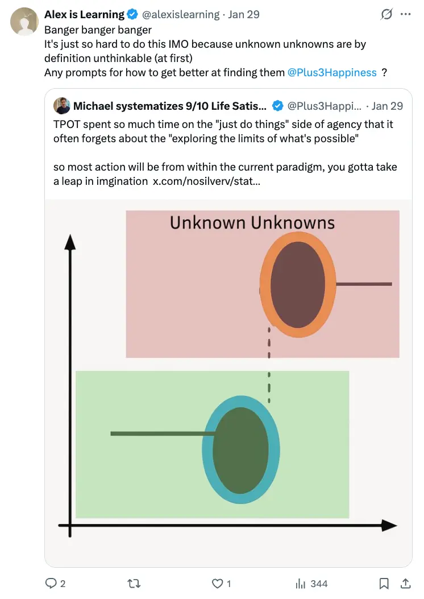
- 👆 this was before I had the term “As”. So this was still something that I couldn’t cleanly/easily think about!
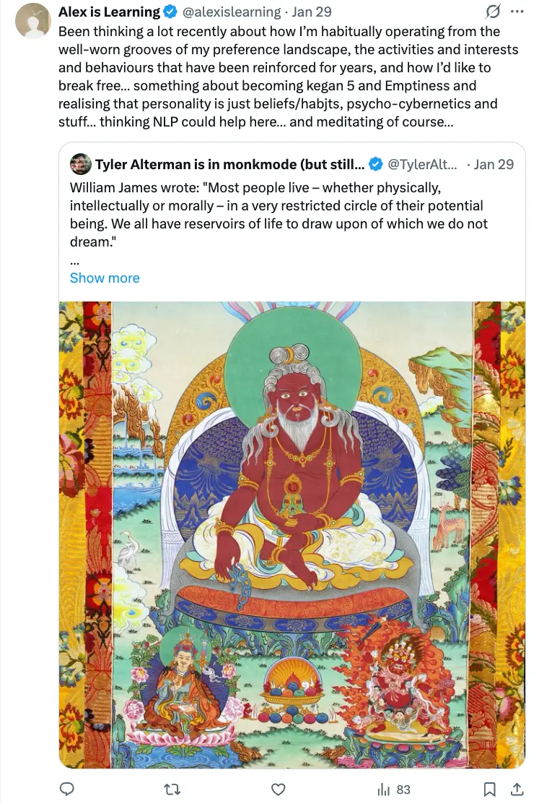
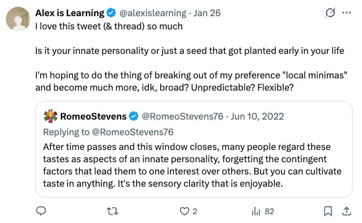
- So yeah, to me these tweets all point at the thing of like, “my god have I been in an A Drought, how the fuck do I get out"
"A” storm
- I’ve been in an A storm these last few days, and, as Defender describes it here, it has been pretty frickin disorienting
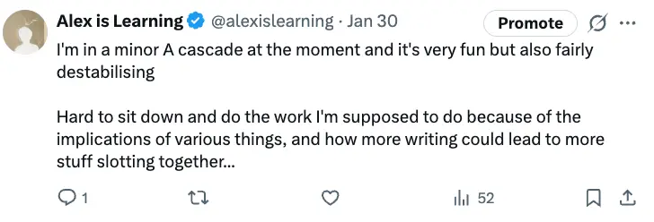
“B”s and “B” floor
- I like this a lot because it gives clear language for the thing of - I live in a community with people with very different world-views to me, and they can feel hard to talk to, and like my whole thing (post-rationalism, Buddhism-type stuff) is illegible to them (often AI Safety people).
- So I’ve used the word “illegible” a lot when thinking about this, but I much prefer “B floor” because it feels much more empowering
- We’re not illegible to each other (which sounds very Fixed, like we’ll never be able to talk), we just don’t have a shared B Floor yet. But actually, yes we do, in other domains, like, we don’t just have to talk about Buddhism-vs-AI-safety and realise we have nothing in common. “Where do we actually have a shared B Floor?“. This is so good, so empowering!!
- Again, I’m brand new to this, so we’re yet to see how this plays out, but I’ve already had one 10 minute conversation IRL with someone who I had been avoiding for weeks because “well, we’re illegible to each other”, and as I was talking to him I mentally noted the As that I was gaining (e.g., more stuff about him, adding resolution to my very low resolution model of him). And it felt so good! “Holy shit, look at me getting As from this guy who I had previously completely written off”. So this could legitimately have implications for how I show up and connect in this in-person community
”U”s
- Haven’t thought about this much yet, apart from I guess when I think “well, I don’t have the B Floor to talk to these AI Safety people about AI Safety”, I’m acknowledging that a lot of what they’d say would be a U to me
- “U”s are related/the same as being in an “A” Drought. You might try to get out of the A Drought, but all you can find are Us. You can’t find a podcast that hits different, you can’t find a book or theory that is genuinely helpful. You try to memorise a load of Us via anki in the hopes that something will click and you will Jump Ahead In Your Understanding.
2026-02-02 - clarifying your A ceiling and following that
- Something is close to clicking re: the first thing of Defender’s that I ever read
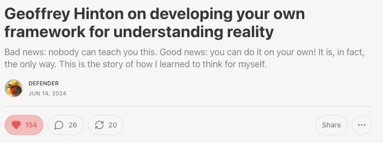
- 👆 link
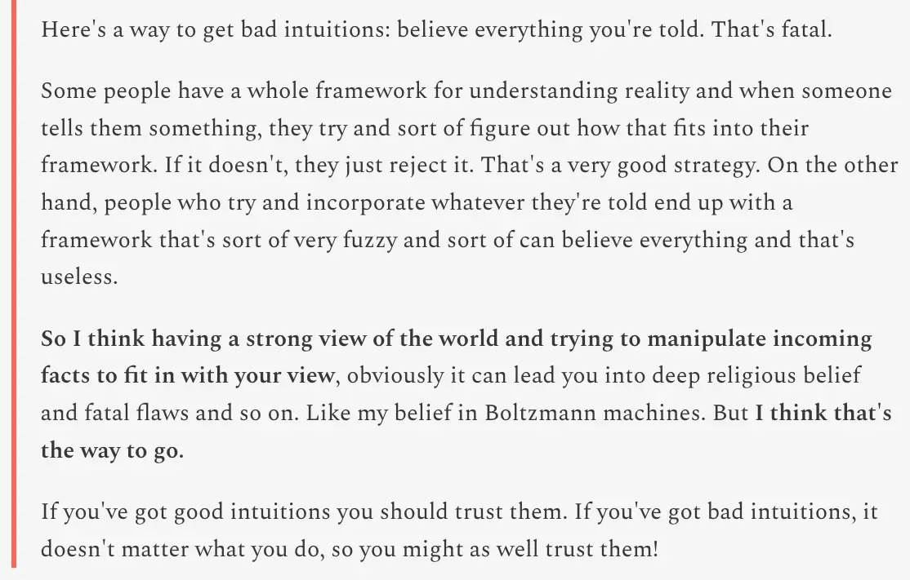
- You can “learn” in such a way where you’ve got a bunch of “U”s, and you’re trying to cram them into your brain. This is what I used to do with Anki flashcards. “I’m learning this topic, and it’s not really useful to me yet, but maybe it will be at some point…”
- And then, what Defender recommends, and what I got excited to do back in June 2025 when I read this, is that what you should do is make predictions. And I was excited about this, although in retrospect it was still kind of a U, the same as “cargo culting”, and it didn’t really click for me
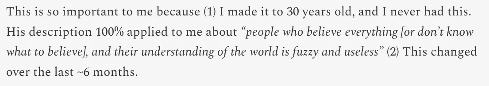
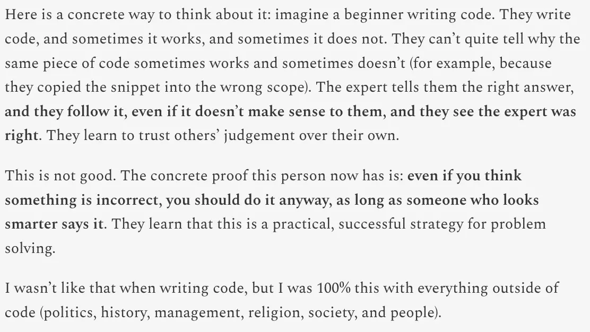
- 👆 cargo culting!
- Vs, if you make a prediction, you are discovering/creating your own frontier, your A ceiling.
- E.g., as I followed his advice, I created predictions for things like Iran & Israel (as Operation Rising Lion had just happened)
- E.g.:
- Israel & Iran (session 2)
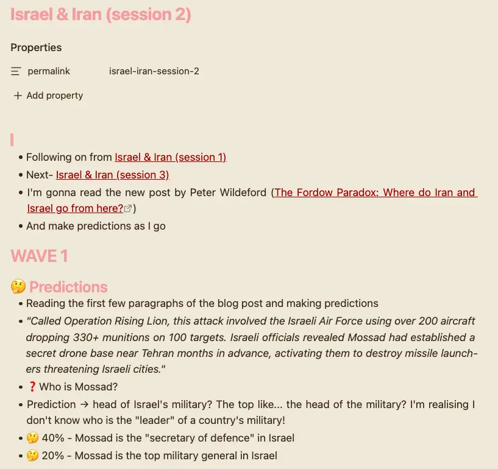
- When I made a prediction, I actually added a point to my own personal model of the thing, that I could very easily validate whether it was “true” or “false”
- Ultimately, this wasn’t a topic that I was genuinely interested in, but it still showed how to make an initial A and actually be engaged in the outcome. The beginning of a possible A cascade, etc, rather than learning a load of Us that you can’t determine if they’re true or not